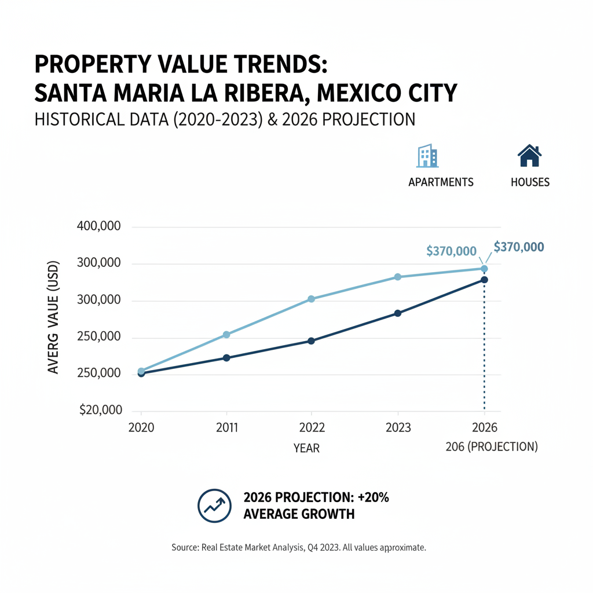

Architectural Guide 2026
Crafting Legacy in Santa María la Ribera
Experience the authentic grandeur of Porfiriato Mexico, reimagined for the 21st century. We specialize in transforming these late 19th-century marvels into ultra-high-net-worth assets, seamlessly blending historic preservation with cutting-edge infrastructure in Mexico City's most compelling growth submarket.

The Resident Architect's View
From my window in Condesa, I often think of Santa María la Ribera. There’s a certain magic in its light at golden hour, catching the Kiosco Morisco's intricate filigree. I come for the vibrant pulse, for the scent of pan dulce mingling with street art, and for a deep-fried quesadilla that whispers generations of flavor. It’s a neighborhood where every turn reveals a Porfirian echo, a genuine soul you feel in the worn cobblestones, a true juxtaposition of 19th-century bourgeois grandeur and intense urban vibrancy.

Erik Martínez, AIA
Principal Architect. Former SHoP Architects NYC. Bringing international precision to CDMX's most complex heritage assets.
Iconic Landmarks
- Kiosco Morisco
- Alameda de Santa María
- Casa Siza (Calle Dr. Atl #103)
- Estudios Maravilla (Calle Sabino #310)
Where History Meets Hyper-Appreciation
Santa María la Ribera, established during the late 19th-century Porfiriato era, stands as one of Mexico City's inaugural planned residential subdivisions. Its wide, tree-lined streets and distinguished architecture initially catered to the affluent bourgeoisie, a legacy that endures despite post-1985 working-class migrations. Today in 2026, this neighborhood is not merely a historic district; it is the primary locus for high-yield, value-add capital deployment, experiencing an annual property price growth of 8% to 9%, significantly outpacing the municipal average. This aggressive appreciation is driven by a sophisticated spillover effect, as discerning buyers, priced out of Roma and Condesa, seek SMLR’s comparable walkability and transit access at a lower cost basis, integrating it rapidly into the global digital nomad economy.
The Architecture of Authentic Distinction
The architectural character of Santa María la Ribera is defined by its extraordinary concentration of heritage assets—over 1,000 formally catalogued buildings. Our work is a precise dialogue with this legacy, preserving the inherent beauty of Porfirian facades while undertaking deep structural and infrastructural modernizations. This means integrating high-specification interior programming into historic shells, creating 'lifestyle' properties that offer both authentic charm and unparalleled comfort for elite expatriates and international creative professionals.
Geotechnical Reality: Engineering in Zone III
From a structural engineering perspective, Santa María la Ribera occupies Zone III (Lakebed Zone)—one of the most challenging environments globally. The neighborhood sits directly on deep, highly compressible, and supersaturated lacustrine deposits from the former Lake Texcoco, with firm strata often 30 to over 50 meters below grade. This geological reality presents a critical engineering challenge: the soil’s capacity for seismic resonance, which can amplify seismic waves 2 to 9 times, and in localized anomalies, up to 28 times, compared to firm rock. During earthquakes, the natural oscillation period of the soil (2.0 to 5.0 seconds) can devastatingly coincide with the natural frequency of mid-rise buildings.
For new multi-story builds, shallow foundations are structurally negligent. Our imperative is the deployment of deep friction piles or end-bearing piles, driven into the deep, firm subterranean strata. For the renovation of historic properties with pre-existing mass masonry foundations, we implement intelligent, lightweight structural reinforcements such as carbon fiber wraps, reinforced masonry ties, or external steel exoskeletons. This approach increases shear strength without adding fatal dead loads. We bridge US NCARB/AIA rigorous engineering standards with local CDMX expertise to eliminate the 'Gringo Tax,' delivering mathematically fair, localized construction costs ranging from $1,100 to $1,300 USD/m² for mid-range finishes, up to $2,500 USD/m² for luxury specifications, eschewing the opportunistic foreign quotes of $2,500 to $3,500 USD/m² through transparent 'cost-plus' contracts.
Heritage Integration: Navigating INAH & INBAL
Santa María la Ribera’s profound architectural legacy is its primary economic driver and its most stringent developmental constraint. Properties built prior to 1900 fall under the absolute authority of INAH (Instituto Nacional de Antropología e Historia). Artistic structures built post-1900, encompassing the neighborhood’s rich Art Nouveau, Art Deco, and early modernist inventories, are governed by INBAL (Instituto Nacional de Bellas Artes y Literatura). The epicenter of this conservation surrounds the Alameda de Santa María and includes highly catalogued streets such as Calle Dr. Atl, Calle Sabino, Calle Sor Juana Inés de la Cruz, and Ribera de San Cosme. Acquiring a property on these streets means becoming a state-mandated custodian.
Any exterior modification or new build requires rigorous, multi-stage review. INAH maintains a strict, pre-authorized color palette, favoring historical accuracy in earthy and mineral tones like deep burgundy (guinda), terracotta, ochre, muted yellows, and specific off-whites. Facade geometries cannot be altered; 'remetimiento' (recessing) or projecting new volumes is strictly forbidden. Window frames must replicate original materials—typically heavy timber or forged iron; modern PVC or aluminum extrusions will result in an immediate work suspension (clausura) and financial penalties. For rooftop additions, deep setbacks and lightweight, dark materials like matte black steel are crucial for gaining approval, ensuring the new volume is invisible from the pedestrian level. Our expertise is in navigating these Heritage Hurdles to ensure seamless compliance and unlock massive premiums for meticulously restored assets.
Water Security: Autonomous Resilience in a Water-Stressed City
Water scarcity is a paramount concern for real estate in Mexico City. While the Sistema Cutzamala, the city's massive external hydrological network, fortunately recovered to 95.5% to 97.4% capacity by late 2025, securing supply stability through 2027, Santa María la Ribera remains a 'water-stressed' neighborhood during the dry season (November to May) due to structural distribution inefficiencies and leakages. To insulate elite properties from municipal volatility and localized scheduled rationing (tandeos), we mandate high-capacity localized storage. Luxury lifestyle assets require subterranean cisterns ranging from 5,000 to 10,000 liters—volumes capable of guaranteeing weeks of autonomous supply during acute outages. This passive storage is actively paired with variable-speed hydropneumatic pumps to ensure consistent, hotel-grade pressure to all fixtures, overcoming the inherently weak municipal feed and creating an 'infrastructure-as-a-service' advantage for premium rental yields.
Architectural Feasibility: Santa Maria De La Ribera 2026
| Project Type | Avg. Permit Time | Seismic Risk Level | Conservation Status |
|---|---|---|---|
| Heritage Porfiriato Renovation (INAH/INBAL) | 18 - 30 Months (Projected) | High (Permitting & Geotechnical) | Strict (Facade, Materials, Colors) |
| New Lifestyle Build (H/3/20 Zoning) | 12 - 24 Months (Projected) | High (Deep Piles, SEDUVI Friction) | Mandatory 20% Permeable Space |
| Interior High-Spec Overhaul (Non-Catalogued Exterior) | 6 - 12 Months (Projected) | Medium (Infrastructure & Gringo Tax) | Internal Freedom (External Constraints Apply) |
Specialized Renovations: Beyond Aesthetics
Restoring a Santa María la Ribera property is an exercise in rigorous technical mastery. We engineer for true lifestyle security: installing high-STC double or triple-glazed units with asymmetrical pane thicknesses and argon gas to combat the neighborhood’s dynamic street life. Our approach integrates mass-loaded vinyl (MLV) and resilient channels within interior drywall assemblies for superior acoustic attenuation. Furthermore, every project incorporates whole-house voltage regulators, Uninterruptible Power Supplies (UPS), or battery microgrids to ensure 24/7 connectivity and power stability against Mexico's vulnerable grid, and deep 10,000-liter cisterns for unparalleled water security.
Bespoke Interior Design: Blending Eras
Our interior philosophy for Santa María la Ribera marries Porfirian grandeur with contemporary functionality. We honor the historic fabric through thoughtful material selection, introducing natural light into deep, narrow lots via interior lightwells and maximizing internal glass without compromising acoustic integrity. Spaces are programmed for the discerning digital nomad, featuring dual-WAN routers with parallel fiber feeds (Totalplay, Telmex) for redundancy, and HVAC systems designed to avoid punitive Tarifa de Alto Consumo (DAC) electricity tariffs, ensuring comfort without hidden operational premiums. We design for quiet luxury, where every modern amenity is seamlessly integrated into a historically sensitive envelope.
The Santa Maria De La Ribera Cheat Sheet
- Best Streets Dr. Atl, Sabino, Sor Juana Inés de la Cruz, Mariano Azuela
- Zoning Code H/3/20 (Residential), HM/4/25 (Mixed-Use)
- Est. Cost / m² USD $1,100 - $2,500/m² (Fair Market Luxury)
- Best Coffee Café Alameda 1890 (local, invented)
- Local Quirk A dynamic soundscape of traditional Mexican acoustic markers (gaseros, tamaleros) against a backdrop of meticulously preserved Porfirian architecture.
The Challenge
The primary challenge in Santa María la Ribera is navigating its deep geological complexities (Zone III Lakebed) and a labyrinthine regulatory environment (INAH/INBAL, SEDUVI) while mitigating pervasive information asymmetries in construction costs.
Securing permits is a protracted process; a Manifestación de Construcción Tipo B or C in Alcaldía Cuauhtémoc can stretch from a realistic 5-8 months to several years. The DRO (Director Responsable de Obra), assuming joint legal and criminal liability alongside a mandated CSE (Corresponsable en Seguridad Estructural), is paramount given the extreme seismic classification.
Our Solution
We de-risk investment through a holistic, technically rigorous approach: employing deep friction piles for structural integrity, aggressive acoustic and power stabilization (STC glazing, UPS microgrids), and high-capacity water autonomy (10,000L cisterns). Our team, fluent in Código Fiscal de la Ciudad de México Article 300 and SEDUVI’s 20% permeable space rule, accelerates bureaucratic timelines.
We eliminate the 'Gringo Tax' through radical transparency, mandating 'cost-plus' contracts with audited material procurement. Our network includes elite Notarios Públicos for rigorous title clearing and tax compliance, and highly connected DROs who ensure project efficiency and structural impermeability against Zone III risks, protecting your core capital and capturing SMLR’s 35-50% cumulative 5-year capital gains potential.


Planning to Buy?
Don't sign a contract before a technical audit. We offer pre-purchase structural assessments in Santa Maria De La Ribera.
2026 Cost Report
Get our detailed breakdown of current labor and material costs for luxury residential in CDMX.
Start Your Santa Maria De La Ribera Legacy
NYC Precision. Mexican Craft. We eliminate uncertainty for international investors.